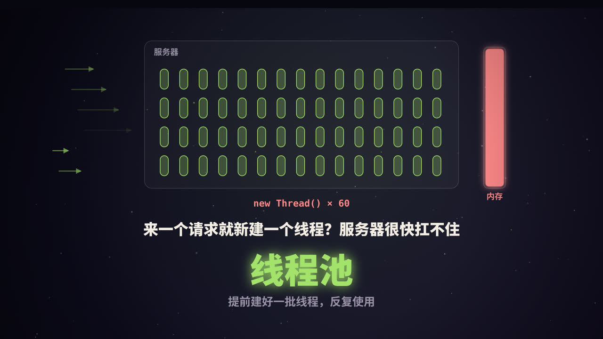
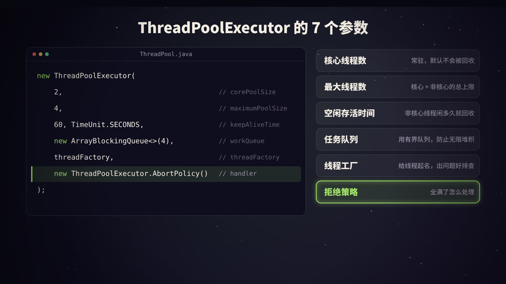
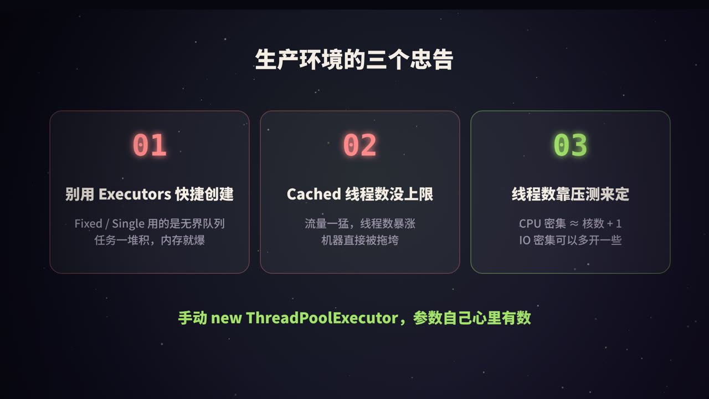

为什么需要线程池
假设你写了一个 Web 服务，每来一个请求就 new Thread() 处理。流量小的时候没问题，流量一大，麻烦就来了：
- 创建和销毁线程有成本。Java 的平台线程对应一个操作系统线程，创建时要向系统申请资源、分配线程栈（64 位 Linux 上默认每个线程栈约 1MB），用完还要回收。
- 线程太多会拖垮机器。几千个线程同时存在，光是栈就要占用大量内存；CPU 在它们之间来回切换（上下文切换），真正干活的时间反而变少了。
- 没有上限就没有保护。流量突增时，线程数无限增长，最终可能导致内存溢出，整个服务宕机。
线程池的思路很简单：提前创建好一批线程，任务来了就交给空闲的线程执行，执行完线程不销毁，接着等下一个任务。同时给线程数和排队数都设上限，超出能力范围的任务，按事先定好的策略处理。
一个比喻：银行柜台
| 银行 | 线程池 |
|---|---|
| 顾客 | 任务（Runnable / Callable） |
| 常驻柜员，一直在岗 | 核心线程（corePoolSize） |
| 等候区的椅子 | 任务队列（workQueue） |
| 忙不过来时加开的临时窗口 | 非核心线程（maximumPoolSize − corePoolSize） |
| 临时柜员闲下来一段时间就下班 | 空闲存活时间（keepAliveTime） |
| 门口保安：满了就劝退 | 拒绝策略（RejectedExecutionHandler） |
一个任务进来，会经历什么
调用 execute(task) 提交任务后，线程池按顺序做这几个判断：
- 当前线程数 < 核心线程数？ 新建一个核心线程来执行这个任务（即使其他核心线程正闲着）。
- 核心线程满了？ 尝试把任务放进队列排队。
- 队列也满了？ 如果线程数还没到最大线程数，新建一个非核心线程来执行它。
- 线程数也到上限了？ 执行拒绝策略。
视频里的例子：核心线程 2 个、最大线程 4 个、队列容量 4。连续提交 9 个任务：
| 任务 | 去向 |
|---|---|
| #1、#2 | 新建 2 个核心线程执行 |
| #3 ~ #6 | 核心线程都忙，进入队列排队 |
| #7、#8 | 队列满了，新建 2 个非核心线程执行 |
| #9 | 线程数已达 4，队列也满，被拒绝 |
最容易误解的一点：很多人以为核心线程满了就会加线程。实际上是先排队，队列满了才加线程。如果用的是一个很大的队列，非核心线程几乎永远不会被创建，
maximumPoolSize形同虚设。
看一眼源码
JDK 中 ThreadPoolExecutor.execute 的核心逻辑（略有简化）：
public void execute(Runnable command) {
int c = ctl.get();
// 1. 线程数小于核心线程数：创建核心线程
if (workerCountOf(c) < corePoolSize) {
if (addWorker(command, true)) return;
c = ctl.get();
}
// 2. 线程池在运行，且成功放入队列
if (isRunning(c) && workQueue.offer(command)) {
int recheck = ctl.get();
if (!isRunning(recheck) && remove(command))
reject(command); // 放进去之后线程池被关了：拒绝
else if (workerCountOf(recheck) == 0)
addWorker(null, false); // 一个线程都没有了：补一个
}
// 3. 入队失败：尝试创建非核心线程；4. 也失败：拒绝
else if (!addWorker(command, false))
reject(command);
}
ctl 是一个 AtomicInteger，高 3 位存线程池的运行状态，低 29 位存线程数量，用一个变量同时记录两件事，方便原子地更新。
每个线程（源码中叫 Worker）执行完手头的任务后，会不断从队列里取下一个任务；队列空了就阻塞等待。非核心线程等待超过 keepAliveTime 还没拿到任务，就会退出。
7 个参数逐个讲透

new ThreadPoolExecutor(
corePoolSize, // 核心线程数
maximumPoolSize, // 最大线程数
keepAliveTime, // 非核心线程的空闲存活时间
unit, // 时间单位
workQueue, // 任务队列
threadFactory, // 线程工厂
handler // 拒绝策略
);
1. corePoolSize：核心线程数
线程池长期保持的线程数。默认情况下，核心线程即使空闲也不会被回收；调用 allowCoreThreadTimeOut(true) 后，核心线程空闲超时也会退出。核心线程默认不会预先创建，如果想在启动时就创建好，可以调用 prestartAllCoreThreads()。
2. maximumPoolSize：最大线程数
线程总数的上限，包括核心线程和非核心线程。只有当队列满了以后，才会创建核心线程之外的线程。
3、4. keepAliveTime + unit：空闲存活时间
超过核心线程数的那部分线程，空闲多久后被回收。
5. workQueue：任务队列
| 队列 | 特点 | 适用场景 |
|---|---|---|
ArrayBlockingQueue |
基于数组，有界，必须指定容量 | 大多数业务场景，推荐 |
LinkedBlockingQueue |
基于链表，不指定容量时上限为 Integer.MAX_VALUE，相当于无界 |
指定容量后也可用 |
SynchronousQueue |
不存储任务，每次放入都要等一个线程来取 | 希望任务直接交给线程、不排队 |
PriorityBlockingQueue |
按优先级排序，无界 | 需要优先级调度 |
6. threadFactory：线程工厂
用来创建线程。最重要的用途是给线程起一个有意义的名字，比如 order-pool-3。线上排查问题时，jstack 打印出的线程名能让你一眼看出是哪个业务的线程池出了问题。
7. handler：拒绝策略
线程和队列都满了以后，新任务怎么处理，下一节详细讲。
4 种拒绝策略
| 策略 | 行为 | 适用场景 |
|---|---|---|
AbortPolicy（默认） |
抛出 RejectedExecutionException |
调用方需要明确知道任务被拒绝 |
CallerRunsPolicy |
由提交任务的线程自己执行这个任务 | 不希望丢任务；同时让提交方变慢，形成自然的「背压」 |
DiscardPolicy |
直接丢弃，不报错 | 任务可以丢失，比如非关键的统计上报 |
DiscardOldestPolicy |
丢弃队列里最老的任务，再尝试提交当前任务 | 只关心最新数据的场景 |
也可以实现 RejectedExecutionHandler 接口自定义，比如记录日志、发告警，或者把任务持久化到消息队列，稍后重试：
RejectedExecutionHandler handler = (task, executor) -> {
log.warn("线程池已满，任务被拒绝: active={}, queue={}",
executor.getActiveCount(), executor.getQueue().size());
retryQueue.offer(task); // 存起来稍后重试
};
重要的业务任务千万别用
DiscardPolicy，任务被悄悄丢掉，排查起来非常痛苦。
生产环境的三个忠告

1. 别用 Executors 的快捷方法
Executors 提供了几个创建线程池的快捷方法，用起来方便，却隐藏着风险：
| 方法 | 内部实现 | 风险 |
|---|---|---|
newFixedThreadPool(n) |
核心 = 最大 = n，LinkedBlockingQueue 无界队列 |
任务堆积时队列无限增长，可能 OOM |
newSingleThreadExecutor() |
单线程 + 无界队列 | 同上 |
newCachedThreadPool() |
核心 0，最大 Integer.MAX_VALUE，SynchronousQueue |
流量突增时线程数暴涨 |
newScheduledThreadPool(n) |
延迟队列无界 | 任务堆积时可能 OOM |
阿里巴巴《Java 开发手册》明确规定：线程池不允许使用 Executors 创建，而是通过 ThreadPoolExecutor 手动创建，让写代码的人对参数心里有数。
2. 线程数靠估算 + 压测来定
一个常用的估算起点：
- CPU 密集型（计算、加解密、压缩）：线程数 ≈ CPU 核数 + 1。线程再多也只是增加切换开销。
- IO 密集型（调接口、查数据库、读文件）：线程大部分时间在等待，可以多开。《Java 并发编程实战》给出的公式是：
线程数 = CPU 核数 × 目标 CPU 利用率 × (1 + 等待时间 / 计算时间)
比如 8 核机器，任务等待 IO 的时间是计算时间的 4 倍，希望 CPU 跑满，那么大约是 8 × 1 × (1 + 4) = 40 个线程。
但这只是起点，真实的最佳值一定要通过压测得出，并在上线后持续观察。
3. 不同业务用不同的线程池
如果所有业务共用一个线程池，一个慢接口就能把线程全部占满，拖垮其他所有业务。按业务隔离线程池，可以把故障限制在局部。
其他实用知识
execute 和 submit 的区别
execute(Runnable)：没有返回值；任务抛出的异常会导致执行它的线程终止，并由线程的未捕获异常处理器打印出来。submit(...)：返回Future；任务抛出的异常会被包装在 Future 里，只有调用future.get()时才会抛出。如果你从不调用get()，异常就被「吞」了，日志里什么也看不到。
优雅关闭
pool.shutdown(); // 不再接收新任务，已提交的继续执行
if (!pool.awaitTermination(30, TimeUnit.SECONDS)) { // 最多等 30 秒
pool.shutdownNow(); // 还没完成：中断正在执行的任务
}
shutdown() 是温和的关闭；shutdownNow() 会尝试中断所有正在执行的任务，并返回队列中还没开始的任务。
监控线程池
ThreadPoolExecutor 提供了不少可以直接读取的指标：
| 方法 | 含义 |
|---|---|
getPoolSize() |
当前线程数 |
getActiveCount() |
正在执行任务的线程数（近似值） |
getQueue().size() |
队列中等待的任务数 |
getCompletedTaskCount() |
已完成的任务数 |
getLargestPoolSize() |
历史最大线程数 |
把这些指标定时上报到监控系统，队列持续增长、活跃线程长期打满时及时告警。setCorePoolSize() 和 setMaximumPoolSize() 还支持运行时动态调整，很多公司的「动态线程池」就是基于这一点做的。
一个完整的推荐写法
ThreadFactory factory = new ThreadFactory() {
private final AtomicInteger n = new AtomicInteger(1);
public Thread newThread(Runnable r) {
return new Thread(r, "order-pool-" + n.getAndIncrement());
}
};
ThreadPoolExecutor pool = new ThreadPoolExecutor(
8, 16,
60, TimeUnit.SECONDS,
new ArrayBlockingQueue<>(1000),
factory,
new ThreadPoolExecutor.CallerRunsPolicy()
);
新变化：虚拟线程
JDK 21 正式引入了虚拟线程（Virtual Threads）。它由 JVM 调度，创建成本极低，可以轻松创建上百万个。对于大量 IO 等待的场景，可以直接「每个任务一个虚拟线程」：
try (ExecutorService executor = Executors.newVirtualThreadPerTaskExecutor()) {
executor.submit(() -> callRemoteService());
}
虚拟线程不需要池化，但这不代表线程池过时了：CPU 密集型任务、需要限制并发数的场景（比如保护下游数据库），依然需要线程池或信号量等手段来控制。
总结
- 线程池的价值：复用线程省掉创建开销，排队缓冲扛住突发流量，兜底拒绝保护系统不被压垮。
- 任务流转顺序：核心线程 → 队列 → 非核心线程 → 拒绝策略，注意是先排队再加线程。
- 生产环境：手动创建
ThreadPoolExecutor，用有界队列，给线程起名字，按业务隔离，并监控关键指标。
参考资料
- Oracle. Java SE API 文档：
java.util.concurrent.ThreadPoolExecutor. - Goetz, B., et al. (2006). Java Concurrency in Practice.（中译本：《Java 并发编程实战》）
- 阿里巴巴.《Java 开发手册》并发处理章节.
- JEP 444: Virtual Threads (JDK 21).